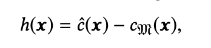
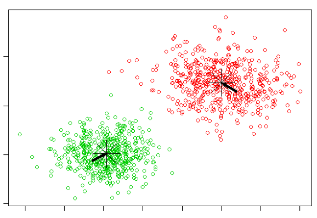
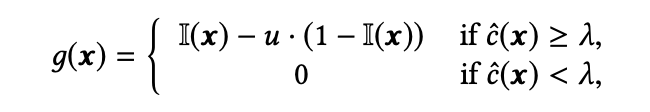
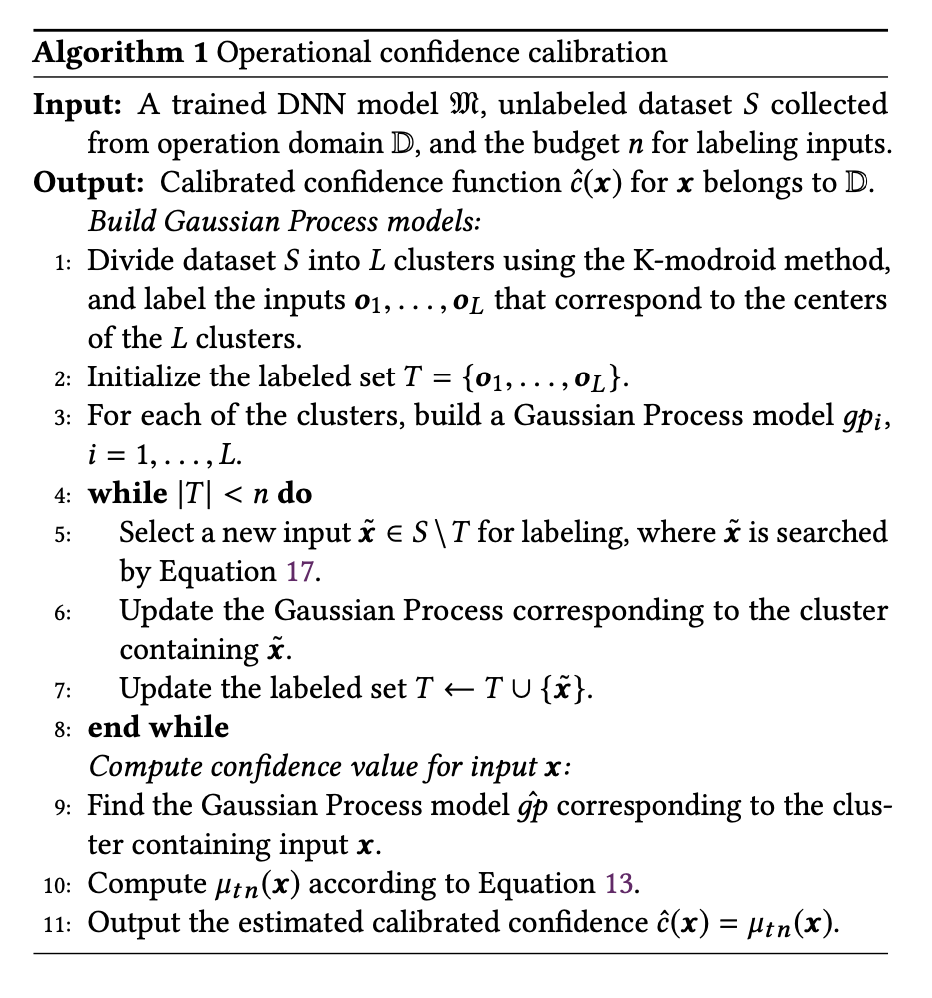
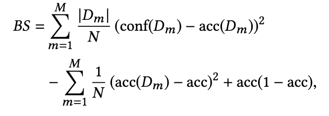
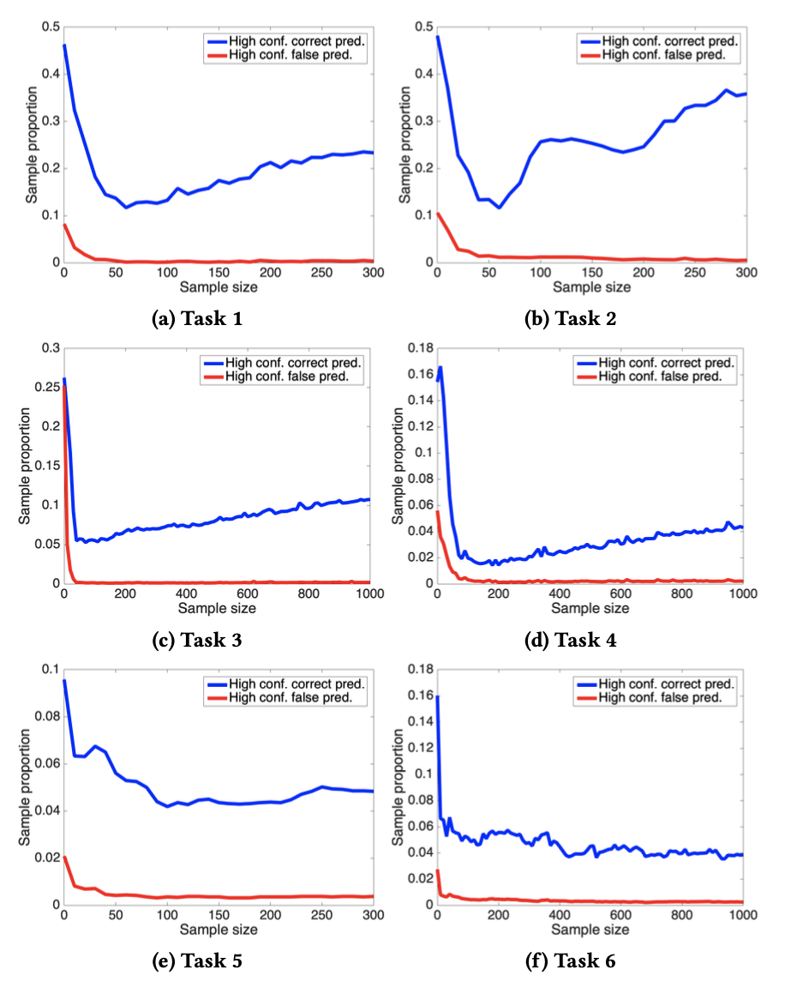

When a DNN is wrong, it’s often more than just wrong: it’s remarkably confident about these wrong answers. They’re optimized for correct answers, not correct confidence.
Why is this a problem for you? It encourages you to make decisions that might have grave consequences!
Domain shift (or dataset shift)
How the problem is created, input-wise: the difference between training data and the real world “operational data”
Do you have millions of dollars to to train GPT-3 or AlphaGo? No, you’ll use COTS models and maybe fine-tune them.
One answer: Temperature Scaling
Even though we’re given a confidence score by softmax, we can’t trust it.
Temperature scaling finds a function R
Correct for systematic bias by finding a function to process the logit pre-softmax to match the result to the real proability.
But it’s only systematic bias, i.e. every input that generates same confidence has the same output probability.
This paper’s answer: Operational Calibration
It’s a given that the system will produce errors, so calibrate the confidence measures to something within reason. But acknowledge that it isn’t systemic.
Operational Calibration doesn’t change the prediction, only the estimation of the likelihood that it is correct. Why is this important?
Brier score
The Brier score
Quantify the accuracy of the confidence with mean-squared error of the estimation.
I(x) is whether it was correctly classified or not.
The formal definition
The formal definition
Test as much operational data as you can (the “budget”), and adjust confidence accordingly.
The challenge here is to strike a balance between the priori that was learned from a huge training dataset but suffering from domain shift, and the evidence that is collected from the operation domain but limited in volume.
How do we do it?
We can’t test everything, so we use a Bayesian technique and model the problem as a Gaussian Process. As we get more data about how off the confidence scores are, we adjust.
The goal: Gaussian Process c
Probability difference between true and softmax. Compare to Temperature Scaling.h is zero-mean normal distribution
The goal: Gaussian Process (cont’d)
Distribution of the confidence scores
The mode of the distribution is our true/estimated probability score.
Step 1: Feature extraction
We treat the last hidden layer as the features of input x.
Assumption: A prediction by the network is more likely to be correct if it’s close to a correct prediction, and incorrect if close to an incorrect prediction. Same with confidences!
Assumption: Feature space is lumpy and clusterable.
Step 2: Clustering
Allows different clusters to have different covariance functions
Visualization of clusters
Decreases computational cost of the Gaussian Processes - one for each cluster.
LCE (Loss due to confidence error)
Not all mistakes are created equal.
A simple cost model
This model assumes no cost or gain if no decision is made, and loss is u for a mistake.
Selecting operational data
The focus of operational calibration is successful budgeting. You don’t have all the time, money, and labels in the world.
How do you pick the data to improve the scores for?
Selecting data to label
Select the operational input at center of each cluster, apply Gaussian Process to compute confidence distribution.
Select the most “helpful” to label, update gaussian process.
Repeat until budget is used up!
You want to reduce variance as much as possible, and pay attention to those near the break-even threshold to reduce LCE.
The algorithm
Why is it more effective?
Brier score decomposition
Realiability distance between confidence and true probability
Resolution distinctions of predictive probabilities
Uncertainty accuracy of the model
Systemic error is only reliability (e.g. TS). OC also cares about resolution.
When is it not more effective?
If the error is systemic, then you’re doing all of this extra work for nothing. Why put things into groups if each group is the same?
When the cost of a false prediction is low enough, errors don’t matter and LCE doesn’t have an effect.
Empirical evaluation
Is our approach to operational calibration generally effective in different tasks?
How effective it is, compared with alternative approaches?
How efficient it is, in the sense of saving labeling efforts?
Six tasks
Varied across domains, operational dataset size, number of classes to classify (classification difficulty), and parameter size (model complexity).
the six tasks
Operational calibration worked wonders on the Brier score.
Effect on Brier score
No matter what kind of regression was used, it almost always came out over Temperature Scaling.
Relationship to fine-tuning
Operational Calibration worked both when fine-tuning was effective (simple tasks, e.g. MNIST, binary classification) and when it was ineffective (non-trivial tasks, e.g. ImageNet). Fine-tuning does not necessarily provide accurate confidence
the Brier score would decrease more if we spent rest operation data on calibration than continuing on the fine-tuning
Worthwhile in all situations when you want to control the impact of incorrect classifications.
Compared to other methods
Brier outcome
Beat out temperature scaling, Platt scaling, enhanced Platt scaling, and Isotonic Regression.
Also tried two other techniques for regression to see if GPR was the right approach. It was!
Efficiency
While it works for metrics like LCE and Brier outcome, what about high-confidence false predictions? Labeled 10% of operational data.
Change in false predictions
What about accuracy? Is this actually an improvement? LCE went down
High confidence predictions
Related work
The differentiating factor is it focuses on operational data and is easily useable with COTS systems. Is a DNN’s output a feature or a bug? Only know when it’s in production!
Inspired by transfer learning, but operational calibration has very limited data from the target/operational domain.
Active learning selected targets to label deliberately, like is done in OC with GPR.